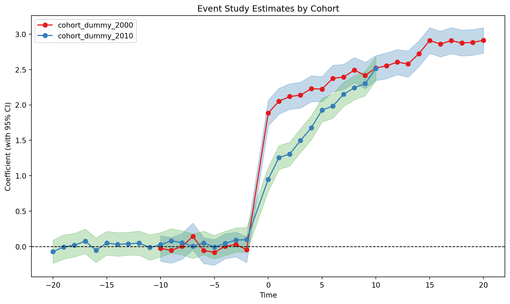

We immediately see that we have staggered adoption of treatment in the second case, which implies that a naive application of 2WFE might yield biased estimates under substantial effect heterogeneity.
We can also plot treatment assignment in a disaggregated fashion, which gives us a sense of cohort sizes.
We immediately see that the first cohort is switched into treatment in 2000, while the second cohort is switched into treatment by 2010. Before each cohort is switched into treatment, the trends are parallel.
We can additionally inspect individual units by dropping the collapse_to_cohort argument. Because we have a large sample, we might want to inspect only a subset of units.
Since this is a single-cohort dataset, this estimate is consistent for the ATT under parallel trends. We can estimate heterogeneous effects by time by interacting time with the treated group:
Event study plots like this are very informative, as they allow us to visually inspect the parallel trends assumption and also the dynamic effects of the treatment.
Based on a cursory glance, one would conclude that parallel trends does not hold because one of the pre-treatment coefficient has a confidence interval that does not include zero. However, we know that parallel trends is true because the treatment is randomly assigned in the underlying DGP.
Pointwise vs Simultaneous Inference in Event Studies
This is an example of a false positive in testing for pre-trends produced by pointwise inference (where each element of the coefficient vector is tested separately).
As an alternative, we can use simultaneous confidence bands of the form \([a, b] = ([a_k, b_k])_{k=1}^K\) such that
These bands can be constructed by using a carefully chosen critical value \(c\) that accounts for the covariance between coefficients using the multiplier bootstrap. In pointwise inference, the critical value is \(c = z_{1 - \alpha/2} = 1.96\) for \(\alpha = 0.05\); the corresponding critical value for simultaneous inference is typically larger. These are also known as sup-t bands in the literature (see lec 3 of the NBER SI methods lectures linked above).
This is implemented in the confint(joint=True) method in the feols class. If we pass the joint='both' argument to iplot, we get the simultaneous confidence bands (for all event study coefficients) in addition to the pointwise confidence intervals. Note that simultaneous inference for all event study coefficients may be overly conservative, especially when the number of coefficients is large; one may instead choose to perform joint inference for all pre-treatment coefficients and all post-treatment coefficients separately.
The joint confidence bands are wider than the pointwise confidence intervals, and they include zero for all pre-treatment coefficients. This is consistent with the parallel trends assumption.
Event Study under Staggered Adoption via feols(), event_study(), did2s(), lpdid()
We now return to the data set with staggered treatment rollout, df_multi_cohort.
Two-Way Fixed Effects
As a baseline model, we can estimate a simple two-way fixed effects DiD regression via feols():
You can also estimate a TWFE model via the event_study() function, which aims to provide a common interface to multiple difference-in-differences implementations:
/home/runner/work/pyfixest/pyfixest/pyfixest/did/saturated_twfe.py:68: UserWarning: The SaturatedEventStudyClass is currently in beta. Please report any issues you may encounter.
warnings.warn(
/home/runner/work/pyfixest/pyfixest/pyfixest/estimation/feols_.py:2759: UserWarning:
22 variables dropped due to multicollinearity.
The following variables are dropped:
C(rel_time, contr.treatment(base=-1.0))[-20.0]:cohort_dummy_2000
C(rel_time, contr.treatment(base=-1.0))[-19.0]:cohort_dummy_2000
C(rel_time, contr.treatment(base=-1.0))[-18.0]:cohort_dummy_2000
C(rel_time, contr.treatment(base=-1.0))[-17.0]:cohort_dummy_2000
C(rel_time, contr.treatment(base=-1.0))[-16.0]:cohort_dummy_2000
....
warnings.warn(

We can obtain treatment effects by period via the aggregate() method
/home/runner/work/pyfixest/pyfixest/pyfixest/did/saturated_twfe.py:271: UserWarning: No artists with labels found to put in legend. Note that artists whose label start with an underscore are ignored when legend() is called with no argument.
ax.legend()
When can we get away with using the two-way fixed effects regression?
We will motivate this section by lazily quoting the abstract of Lal (2025):
The use of the two-way fixed effects regression in empirical social science was historically motivated by folk wisdom that it uncovers the Average Treatment effect on the Treated (ATT) as in the canonical two-period two-group case. This belief has come under scrutiny recently due to recent results in applied econometrics showing that it fails to uncover meaningful averages of heterogeneous treatment effects in the presence of effect heterogeneity over time and across adoption cohorts, and several heterogeneity-robust alternatives have been proposed. However, these estimators often have higher variance and are therefore under-powered for many applications, which poses a bias-variance tradeoff that is challenging for researchers to navigate. In this paper, we propose simple tests of linear restrictions that can be used to test for differences in dynamic treatment effects over cohorts, which allows us to test for when the two-way fixed effects regression is likely to yield biased estimates of the ATT.
You can employ the proposed test after running a saturated event study by calling the test_treatment_heterogeneity() method:
In this case, we might be willing to rely on the simple TWFE model to produce unbiased estimates. If we’re not, two “new” difference-in-differences estimators are implemented (beyond the already-presented saturated Sun-Abraham approach) that produce unbiased estimates under staggered assignment and heterogeneous treatment effects: Gardner’s 2-Step Estimator and the Local Projections estimator from Dube et al.
Gardner’s 2-Step Estimator
To do the same via Gardners 2-stage estimator, we employ the the pf.did2s() function: